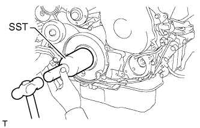

ПЕРЕДНИЙ САЛЬНИК КОЛЕНЧАТОГО ВАЛА > УСТАНОВКА |
| 1. УСТАНОВИТЕ ПЕРЕДНИЙ САЛЬНИК КОЛЕНЧАТОГО ВАЛА |
Нанесите универсальную консистентную смазку на кромку нового сальника коленчатого вала.
|  |
При помощи SST и молотка запрессуйте сальник коленчатого вала так, чтобы его поверхность была заподлицо с краем крышки газораспределительного механизма.
| 2. УСТАНОВИТЕ ШКИВ КОЛЕНЧАТОГО ВАЛА |
Совместите шпоночную канавку шкива со шпонкой коленчатого вала, а затем задвиньте шкив на место.
 |
С помощью SST затяните болт шкива.
| 3. УСТАНОВИТЕ КРЫШКУ ШКИВА КОЛЕНЧАТОГО ВАЛА (для моделей с DPF) |
Закрепите крышку шкива коленчатого вала 2 болтами.
| 4. УСТАНОВИТЕ КОЖУХ ВЕНТИЛЯТОРА |
Установите шкив вентилятора на насос системы охлаждения.
Подсоедините перепускной шланг охлаждающей жидкости № 2 к впускному патрубку охлаждающей жидкости.
Временно закрепите 4 гайками кожух вместе с вентилятором с вискомуфтой на насосе системы охлаждения. Затяните гайки вручную до упора.
 |
Присоедините захваты кожуха к радиатору, как показано на рисунке.
Установите кожух вентилятора на радиатор и закрепите 2 болтами.
Установите поликлиновой ремень вентилятора и генератора (Нажмите здесь).
Закрепите вентилятор с вискомуфтой на насосе системы охлаждения 4 гайками.
Присоедините перепускной шланг охлаждающей жидкости № 2 к зажиму на кожухе вентилятора.
Для моделей с автоматической трансмиссией:
 |
Подсоедините 2 патрубка масляного радиатора.
| *a | Правая сторона |
| *b | 2,0 - 7,0 мм |
| *c | Вид A |
Присоедините 2 шланга масляного радиатора к зажиму на кожухе вентилятора.
Подсоедините перепускной шланг охлаждающей жидкости № 2 к расширительному бачку радиатора.
Подсоедините перепускной шланг охлаждающей жидкости № 1 к кожуху вентилятора и закрепите его 2 зажимами.
Установите расширительный бачок радиатора и закрепите его 3 болтами.
| 5. УСТАНОВИТЕ ПАТРУБОК РАДИАТОРА № 1 |
 |
Установите патрубок радиатора и присоедините зажим.
| *1 | Выступы |
| *2 | Метка, нанесенная краской |
| *a | Верх |
| *b | Левая сторона |
| 6. ДОБАВЬТЕ ОХЛАЖДАЮЩУЮ ЖИДКОСТЬ ДВИГАТЕЛЯ |
Затяните пробку сливного крана радиатора вручную.
Затяните пробку сливного крана блока цилиндров.
Заполните радиатор охлаждающей жидкостью с увеличенным сроком замены "Super Long Life Coolant (SLLC)" от компании Тойота, залив ее в трубопровод B расширительного бачка.
| Параметр / Устройство | Заданные условия | |
| для моделей с автоматической трансмиссией | Для моделей с задним подогревателем | 14,9 литра (15,7 кварты США, 13,1 английской кварты) |
| Для моделей без заднего подогревателя | 13,1 литра (13,8 кварты США, 11,5 английской кварты) | |
| для моделей с механической трансмиссией | Для моделей с задним подогревателем | 15,0 литра (15,8 кварты США, 13,2 английской кварты) |
| Для моделей без заднего подогревателя | 13,2 литра (13,9 кварты США, 11,6 английской кварты) | |
Несколько раз сожмите рукой входной и выходной патрубки радиатора, затем проверьте уровень охлаждающей жидкости.
Если уровень охлаждающей жидкости опускается ниже линии В, долейте охлаждающую жидкость SLLC Toyota до линии В.
Установите пробку расширительного бачка радиатора.
Установите вентиляционную пробку с помощью гаечного ключа.
Выпустите воздух из системы охлаждения.
Прогревайте двигатель, пока не откроется термостат. Когда термостат откроется, несколько минут прокачивайте охлаждающую жидкость.
Поддерживайте частоту вращения коленчатого вала двигателя на уровне 2500–3000 об/мин.
Несколько раз сожмите рукой входной и выходной патрубки радиатора, чтобы удалить воздух.
Остановите двигатель и подождите, пока охлаждающая жидкость остынет до температуры окружающего воздуха.
Когда охлаждающая жидкость остынет, убедитесь, что она находится на уровне отметки FULL.
Если уровень охлаждающей жидкости ниже отметки FULL, долейте SLLC от компании Тойота до этой отметки.
| 7. ПРОВЕРЬТЕ, НЕТ ЛИ УТЕЧЕК ОХЛАЖДАЮЩЕЙ ЖИДКОСТИ |
Заполните радиатор охлаждающей жидкостью и подсоедините приспособление для опрессовки системы охлаждения и проверки пробки радиатора.
Прогрейте двигатель.
С помощью приспособления для опрессовки системы охлаждения и проверки пробки радиатора увеличьте давление в радиаторе до 123 кПа (1,3 кгс/см2, 18 фунтов на кв. дюйм) и убедитесь, что давление не падает.
Если давление снижается, проверьте на наличие утечек шланги, радиатор и насос системы охлаждения. При отсутствии внешних утечек проверьте сердцевину нагревателя, блок цилиндров и головку.
| 8. УСТАНОВИТЕ ЗАЩИТУ КАРТЕРА ДВИГАТЕЛЯ № 1 В СБОРЕ |
Установите защиту картера двигателя № 1 и закрепите ее 4 болтами.
| 9. УСТАНОВИТЕ НИЖНЮЮ ОБЛИЦОВКУ ПЕРЕДНЕГО БАМПЕРА |
Установите нижнюю накладку переднего бампера и закрепите ее фиксатором и 5 болтами.